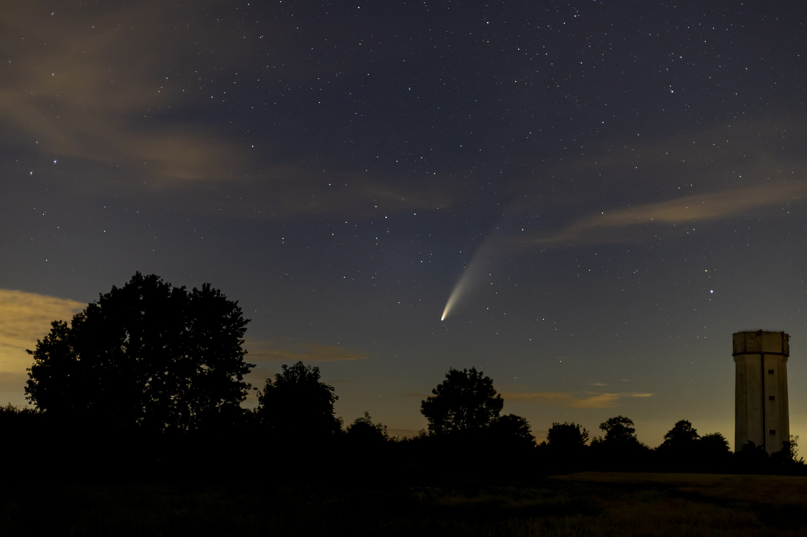

Az üstökös olyan naprendszerbeli égitest, amely a Nap körül, általában elnyújtott pályán kering, és a Nap közelébe érve jellegzetesen fényes kómája és csóvája fejlődik – mindkét jelenség legfőbb oka az üstökösmagot érő napsugárzás.Maguk az üstökösmagok lazán összekapcsolódó jégből, porból és szikladarabokból állnak, méretük néhány kilométertől néhány tíz kilométerig terjed.
Az üstökösök keringési ideje változó, néhányszor tíz évtől több száz vagy több ezer évig is terjedhet, miközben némelyikről feltételezhető, hogy csak egyetlenegyszer halad át a belső Naprendszeren, mielőtt kilökődik a csillagközi térbe. A rövidperiódusú üstökösökről úgy gondolják, hogy a Kuiper-övből vagy a Neptunusz pályáján túl található szórt korongból származnak. A hosszúperiódusú üstökösök valószínűleg a Naptól jóval nagyobb távolságból erednek, az Oort-felhőből. Az üstökösöket a Naprendszer ezen távoli zónáiból (a Kuiper-öv objektumai esetében) a külső bolygók vagy (az Oort-felhő objektumai esetében) közeli csillagok perturbációja vagy ütközések eredménye löki a Nap irányába.

Az üstökösök törmelékből álló csóvát hagynak maguk után. Ha az üstökös keresztezi a Föld pályáját, azon a ponton, ahol a Föld áthalad a csóva törmelékhalmazán, meteorzápor keletkezhet. A Perseidák meteorraj minden évben augusztus 9. és 13. között éri el a Földet, miközben az áthalad a Swift–Tuttle-üstökös pályáján. Az Orionidák meteorraj forrása a Halley-üstökös.
Az üstökösöket a kóma vagy a csóva jelenléte különbözteti meg a kisbolygóktól, bár egyes nagyon öreg üstökösök, melyek összes illékony anyagukat elvesztették, kisbolygóra emlékeztető objektummá válhatnak. A kisbolygókról az is feltételezhető, hogy máshonnan származnak, mint az üstökösök; a Naprendszernek nem a külső, hanem a belső részében jöttek létre. Az újabb felfedezések mindazonáltal kissé elmosták a határokat a kisbolygók és üstökösök között.
2008 szeptemberében 3535 üstökös volt ismert, melyek közül több száz rövidperiódusú. Ez a szám gyorsan emelkedik, bár ez a lehetséges összes üstökösnek csak egy töredékét adja: az üstökös-szerű testek száma a külső Naprendszerben elérheti az egy billiót. A szabad szemmel észlelhető objektumok száma évente átlagosan egy, bár ezek közül sok halvány, vagy nem látványos.